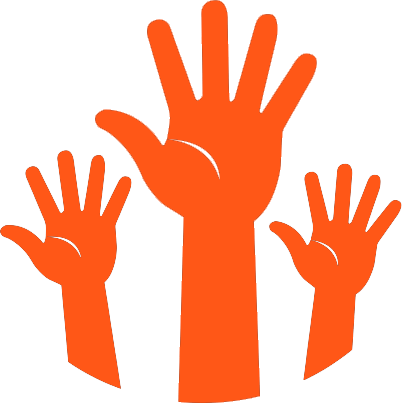

O Núcleo Assistencial Anjos da Noite foi fundado em1989, por Kaká Ferreira e José Amanto. A casa assiste cerca de 800 pessoas em situação de rua por semana, trabalho que só pôde ser desenvolvido com a ajuda de seus 250 voluntários.
A história da organização teve seu início após Kaká ser abordado por um morador de rua de 60 anos, numa noite fria, cuja temperatura era por volta de 4ºC. Kaká o auxiliou, dando-lhe novas roupas quando escutou: “Você é um anjo da noite”.
Aquele foi o estopim para o trabalho mais gratificante de sua vida, sonhou que precisava continuar a ajudar. Logo, reuniu um grupo de amigos e saiu para distribuir alimentos aos necessitados. A partir desse dia, nunca mais parou. Passou a arrecadar com amigos, familiares e vizinhos, alimentos, roupas, calçados, agasalhos e cobertores para que dessa forma pudessem amenizar o sofrimento de pessoas tão carentes que vivem e dormem nas ruas, nas noites frias de São Paulo.
Porém alimento não é suficiente, é preciso carinho e respeito. Todos precisam de incentivo para continuar a viver.
Kaká Ferreira- fundador
Palavras do Kaká:
“Talvez nos tornamos desafortunados, afinal cidades são feitas de conjuntos de pessoas no mesmo espaço, o que forma uma metrópole, o restante é apenas a infraestrutura para melhor convivência entre seus integrantes, ou seja, ruas, avenidas, praças, parques, dinheiro e tudo que provém dele; os quais servem para amenizar os atritos do relacionamento humano. Portanto, nós somados a esses elementos nos tornamos um e movemos o tempo, o que é caracterizado como “vida”, porém o contrário parece ser feito, estamos nos afastando invés de nos aproximarmos, estamos ocupados demais para reparar que estamos perdendo a noção de cidadania, que muito além de uma palavra, é um conjunto de ações feitas por um cidadão, é a prática da humanidade.”
MISSÃO
Trabalhar pelo resgate da autoestima das pessoas em situação de rua, a fim de possibilitar a sua reintegração social.
Trabalhamos ajudando pessoas as quais estão em situação de rua através de distribuição de alimentos, roupas, água e ainda mais, os ajudamos não só com o que é necessário para viver, mas também com amor, carinho, respeito, tudo para que ele sinta o amor que lhe é dado. Não se trata apenas de um agasalho, de água que mate sua sede, a missão é reintegrar o cidadão em situação de rua de volta a sociedade e dessa forma resgatar sua auto-estima.
1989
Nascimento do Núcleo Assistencial Anjos da Noite
1992
Primeiro automóvel que se tornou mascote.
1992/1997
Realização de refeição no formato praça de alimentação.
1998
Realização de documentário na Rede Globo.
2003
Entrega de marmitas de mão em mão.
2008
Participação no programa Mais Você da Rede Globo.
2011
Participação no programa TV MUNDI.
2012
Conquista de 250 voluntários.
2019
Redesign do website pelos alunos de Design da Universidade Nove de Julho.
DEPOIMENTOS

Kaká Ferreira
Fundador
"As coisas mais permanentes são as mudanças"
Neusa Meire Fagali
Membro do Conselho
“É gratificante, me dá forças e quero voltar sempre. Pois crescemos e evoluímos como pessoa e espírito."
Junior Pereira
Voluntário há 5 anos
“É maravilhoso, você sempre quer fazer mais. É muito bom! O que vemos aqui é chocante, mas também gratificante.”
Fabiana Bonil de Almeida
Voluntária há 28 anos
“Adoro fazer parte, adoro estar aqui para enxergar a realidade. É um aprendizado de vida”.
Claúdio Estor
Voluntário há 12 anos
“Legal! Já fiz vários trabalhos porque é algo espontâneo e divertido. Me fez enxergar a vida de forma mais ampla e diferenciada. Vi que posso fazer a diferença”.
Leandro Eduardo
Voluntário há 11 anos
“Fico sem palavras, pois não tem preço! É uma benção! Aprendi a ter um olhar empático”.
André Luiz dos Santos
Voluntário há 7 meses
“Gratificante! Ajudando o meu semelhante, ajudo a mim mesmo! A sensação é indescritível! E não admito a não caridade”.
Jairo Lins
Voluntário
“Tentar ajudar as pessoas de algum modo, acaba nos ajudando até mais do que o próximo. Saímos melhor do que entramos”.
Julio Cesar
Voluntário
"Desde minha adolescência já atuava como voluntário de outras formas, como: recolher alimentos em portas de mercados para auxílio de sopas comunitárias. Isso me despertou senso de responsabilidade e consciência sobre ajudar o próximo. .